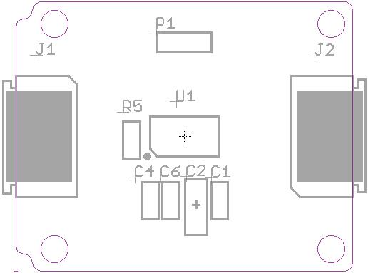
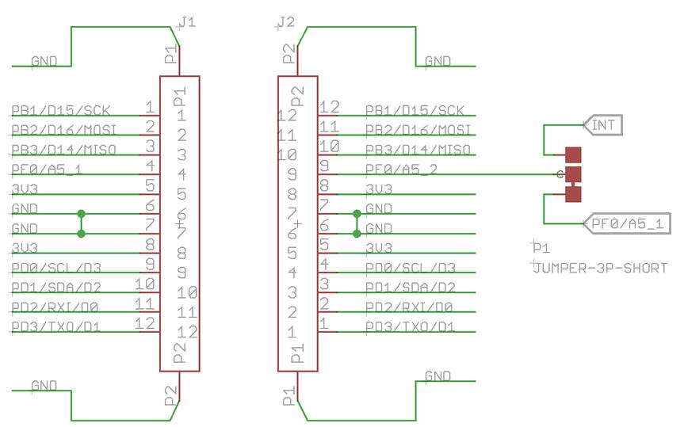

The sensor on Xadow - Gesture v1.0 is PAJ7620U2 that integrates gesture recognition function with general I2C interface into a single chip. It can recognize 13 gestures including move up, move down, move left, move right, move forward, move backward,circle-clockwise, circle-counter clockwise, up to down ,down to up,left to right ,right to left and wave. These gestures information can be simply accessed via the I2C bus.

P1:Short-circuits,then interrupt signal will be connected with pin PF0/A5 .
U1:PAJ7620U2;Integrated Gesture Recognition Sensor.
J1,J2:FPC interface.
Note: when connect Xadow - Gesture to Xadow Main Board, the connection direction should be cautious. The connection method is that the unfilled corner of one xadow module connect to the right angle of another module(see four corners of each xadow module).
Pins on both sides of Xadow modules are symmetrical, here are pins descriptions about Interface from top to bottom.

| Xadow Pins | PAJ7620U2 Pins | Function |
|---|---|---|
| 1 | NC | (PCINT1/SCLK)PB1 |
| 2 | NC | (PDI/PCINT2/MOSI)PB2 |
| 3 | NC | (PDO/PCINT3/MISO)PB3 |
| 4 | 3/INT | PF5(ADC5/TMS) |
| 5 | 1/VBUS , 11/VLED , 12/VDD, | VCC |
| 6 | 6/GND , 10/GND | GND |
| 7 | 6/GND , 10/GND | GND |
| 8 | 1/VBUS , 11/VLED , 12/VDD, | VCC |
| 9 | 5/SCL | (OC0B/SCL/INT0 )PD0 |
| 10 | 2/SDA | (SDA/INT1)PD1 |
| 11 | NC | (RXD/INT2)PD2 |
| 12 | NC | (TXD/INT3)PD3 |
Xadow - Gesture v1.0 sch pcb.zip
PAJ7620U2_Datasheet_V0.8_20140611.pdf
Library of Xadow - Guesture